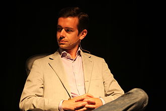

Twitter
Uno de los grandes fenómenos creados con el uso de Twitter
son las Tendencias o Trending Topics, que se establecen a
partir de los asuntos o perfiles más buscados y comentados
en la red social. De esta manera, se convierten en una gran
ventaja para el negocio, ya que traen datos importantes, como
saber de qué habla la gente y qué está de moda, y aprovecharlos
para dialogar mejor con el público y mantener el producto/servicio actualizado.
Desde su creación en marzo de 2006 por Jack Dorsey y su
lanzamiento en julio del mismo año, esta plataforma ha
adquirido una amplia popularidad a nivel global.
Se estima que cuenta con más de 500 millones de usuarios,
generando diariamente alrededor de 65 millones de tuits.
Desde el comienzo del rediseño a X en julio de 2023, los
tweets pasaron a llamarse posts y los retweets, reposts.
Así mismo, la red social utiliza ambos términos, tweets/posts
y retweets/reposts, indistintamente en sus diferentes páginas y servicios.
Existe algo de controversia acerca de cómo se gestó la idea que dio origen a Twitter.
Según algunas fuentes, la idea original surgió dentro de la compañía Odeo, mientras
se estaba desarrollando un servicio de radio en línea (podcast) que no tuvo éxito
debido al lanzamiento casi simultáneo de un producto similar por parte de iTunes.
El primer prototipo fue usado internamente entre los empleados de Odeo. Sus creadores
habrían sido los ex trabajadores de Google, Evan Williams y Biz Stone con la colaboración
de Jack Dorsey, Evan Henshaw-Plath y fundamentalmente de Noah Glass. Glass, que al poco
tiempo fue despedido de la compañía, ha manifestado que Twitter nació en su propia máquina.

Continuara...
Regresar al menú